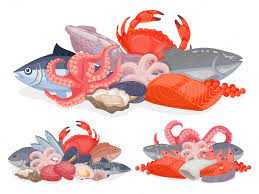

About Me

My name is Joseph Thao but you can call me Joey. I obtained a bachelor's degree in biology from the University of Arkansas Fort Smith. In the past, I worked in various jobs from turkey polutry farming to laboratory technician and finally to seafood quality assurance technician. I realized these fields wasn't for me so here I am writing my portfolio hoping to obatin a job in the tech field (By the way, so far I'm liking the tech field way more than what I was doing PREVIOUSLY!!!!!).
Hobbies:
I enjoy playing with my niece, jogging and reading books.


Projects
I used HTML and CSS to build my first application. I used HTML to showcase my skills of building the foundational structures of a website that have the potential to be useful for the users in the future. I used CSS to show my abilities of styling the website in an appealing manner to the users.

Work on other projects using Python and Java (PLEASE NOTE: the deploy links on the images are also placeholders).
Work Experiences
